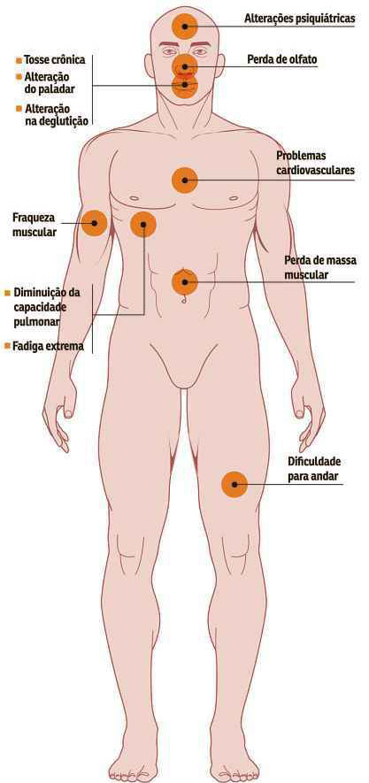
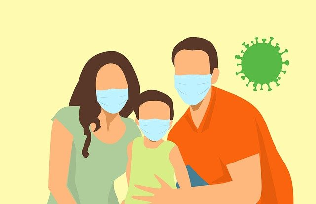

Sintomas
A pessoa que contrair o COVID-19 pode ter vários sintomas, entre as mais comuns ate as mais graves, abaixo tem a lista de todos os sintomas, assim você pode verificar se está com um desses males, para que possa ir rapidamente no medico e fazer o teste do COVID.

Sintomas mais comuns:
- Tosse
- Cansaço
- Perda do gosto ou cheiro
- Febre
Sintomas menos comuns:
- Dor de cabeça
- Diarreia
- Olhos vermelhos
- Dores no corpo
- Dores na garganta
- Irritações na pele
Sintomas graves:
- Dificuldade para respirar ou falta de ar frequente
- Perda na fala, mobilidade ou confusão
- Dores no peito
O que eu faço para previnir?
É uma certeza que ninguem deseja pegar a doença, e temos como evitar sim! Com ações simples, você impede de ir para o hospital, aqui algumas dicas para lhe ajudar:
- Use máscara quando sair de casa
- Matenha distancia de ate 1 metro de outra pessoa
- Use alcool em gel 70% ou limpe as mãos com sabão
- Saia de casa se realmente for necessario
- Ao chegar em casa, coloque suas roupa na maquina de lavar e tome banho
- TOME A VACINA CONTRA O CORONA VÍRUS!
